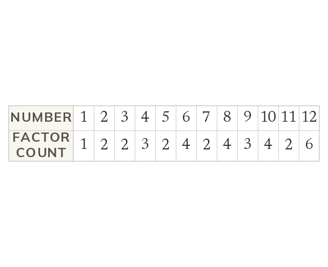
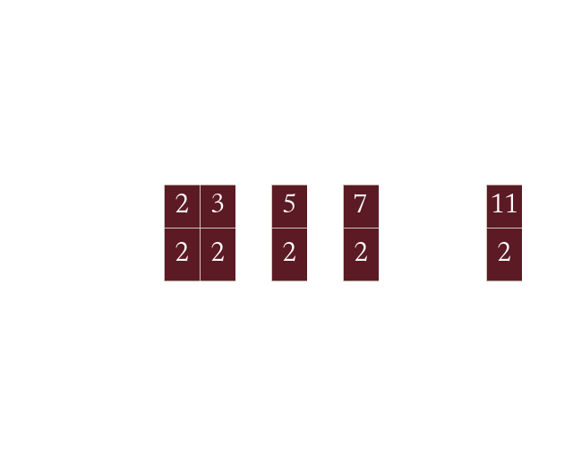

Prime factors are the building blocks behind fraction simplifying, HCF and LCM later this fortnight - today's the day you learn to break any number down into them reliably.
By the end you’ll know…
A factor of a number divides into it exactly, with no remainder.
A multiple of a number is what you get by multiplying it by a whole number.
A prime number has exactly two factors, 1 and itself - so 1 is not prime, because it only has one factor.
Every whole number greater than 1 breaks down into a unique product of prime numbers (its prime factorisation); a factor tree finds this by repeatedly splitting a number into a factor pair and continuing to split any factor that isn't yet prime.
By the end you can
G2List all the factors of a number and the first several multiples of a number, and identify prime numbers up to 100.
G3Express a number as a product of its prime factors using a factor tree.
Work down the page at your own pace. Write every answer in your book first, then click to check it.
01
Do Now
About 5 minutes
1
List all the factors of 18.
1, 2, 3, 6, 9, 18.
2
Write the first five multiples of 6.
6, 12, 18, 24, 30.
3
What is 7 times 8?
56.
4
What is 9 times 6?
54.
5
Divide 84 by 4.
21.
6
Divide 145 by 5.
29.
Remember these?
LAST LESSONCalculate -6 + 9.
3
LAST WEEKWhat is 0.8 multiplied by 100?
80
LAST TERMA conversion graph shows 5 miles = 8 km. Using this, roughly how many km is 10 miles?
About 16 km
LAST YEARA line falls 3 squares down for every 1 square across. What is its gradient?
-3
02
Learn
Read each card, then follow the worked examples one step at a time.
A factor divides into a number exactly. A multiple is the number times a whole number. A prime has exactly two factors, so 1 is not prime.
A factor of a number divides into it exactly, with no remainder. A multiple of a number is what you get by multiplying it by a whole number. A prime number has exactly two factors: 1 and itself - so 1 is not prime, because it only has one factor.


LISTING FACTORS
List the factors of 18.
Pair up from 11 × 18
2 × 9
3 × 6
Try 4 and 5neither divides 18 - and 6 is already in a pair, so the pairs would start repeating: stop.
Factors of 181, 2, 3, 6, 9, 18
MULTIPLES INSTEAD
Now list the first 5 multiples of 7.
Add 7 each time7, 14, 21, 28, 35
YOUR TURN · a
List the factors of 20, then the first 5 multiples of 9. (Hint: for the factors, work through pairs from 1 upwards and stop once they repeat.)
factors of 20 = 1, 2, 4, 5, 10, 20; multiples of 9 = 9, 18, 27, 36, 45
YOUR TURN · b
Factors of 28 and first 5 multiples of 6.
factors of 28 = 1, 2, 4, 7, 14, 28; multiples of 6 = 6, 12, 18, 24, 30.
03
Check your understanding
Pick an answer. If it's wrong, the feedback tells you which mistake it was.
Which of these is a factor of 24?
Not quite.24 ÷ 5 isn't a whole number, so 5 isn't a factor.
Yes.24 ÷ 8 = 3, so 8 is a factor.
Not quite.48 is a multiple of 24. A factor divides into 24.
Not quite.30 is bigger than 24, so it can't divide into it.
Which of these is prime?
Not quite. A prime has exactly two factors. 1 has only one.
Yes.17 has exactly two factors, 1 and 17.
Not quite.15 = 3 × 5, so it isn't prime.
Not quite.9 = 3 × 3, so it isn't prime.
What are all the factors of 36?
Not quite. You missed some pairs: 4 × 9 and 3 × 12.
Checkpoint. List all the factors of 40 and the first 5 multiples of 8, then state whether 40 is prime and explain how you know.Show your teacher before you go on
Find a number between 20 and 30 with exactly 3 factors.
25: its factors are 1, 5 and 25
05
Learn
Read each card, then follow the worked examples one step at a time.
Every whole number above 1 is a unique product of primes. A factor tree splits a number into factor pairs. Keep splitting until every branch ends in a prime.
Every whole number greater than 1 can be broken down into a unique product of prime numbers - its prime factorisation. A factor tree finds this by repeatedly splitting a number into a factor pair and continuing to split any factor that isn't prime yet, until every branch ends in a prime.